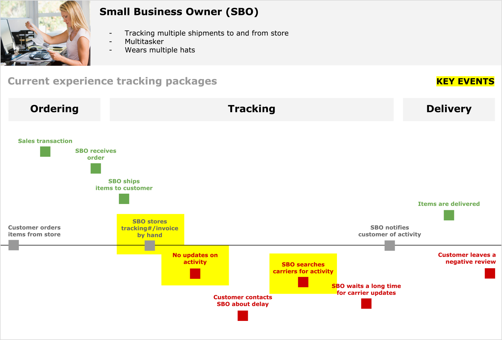
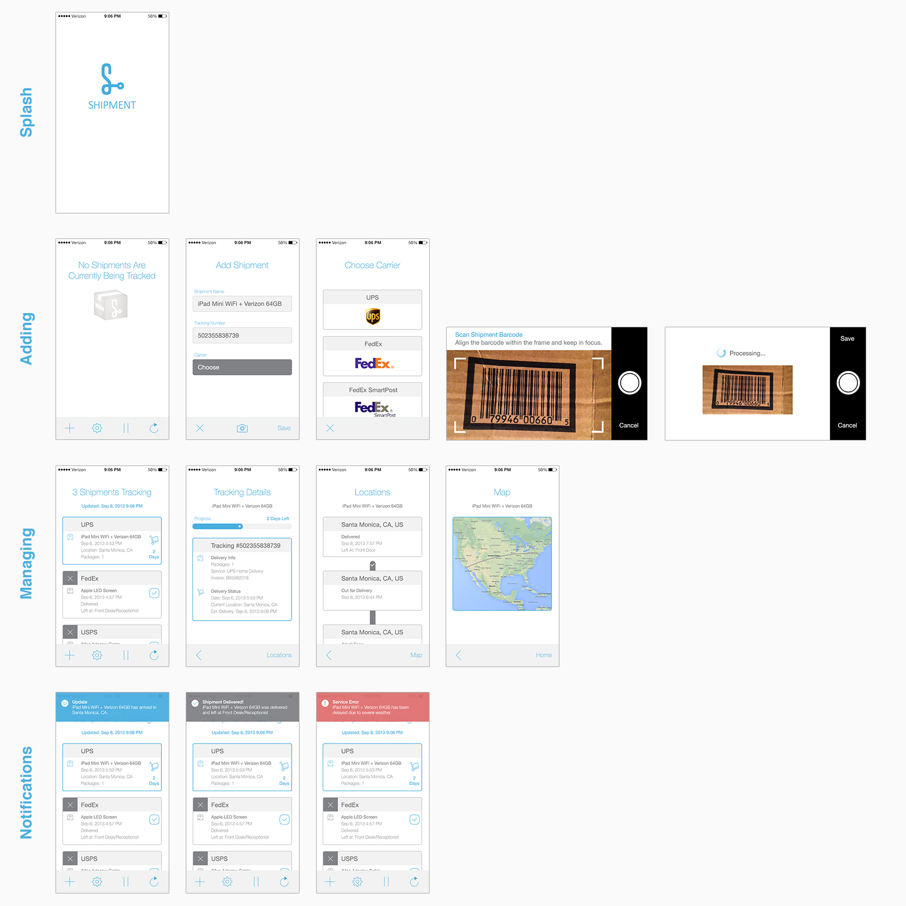
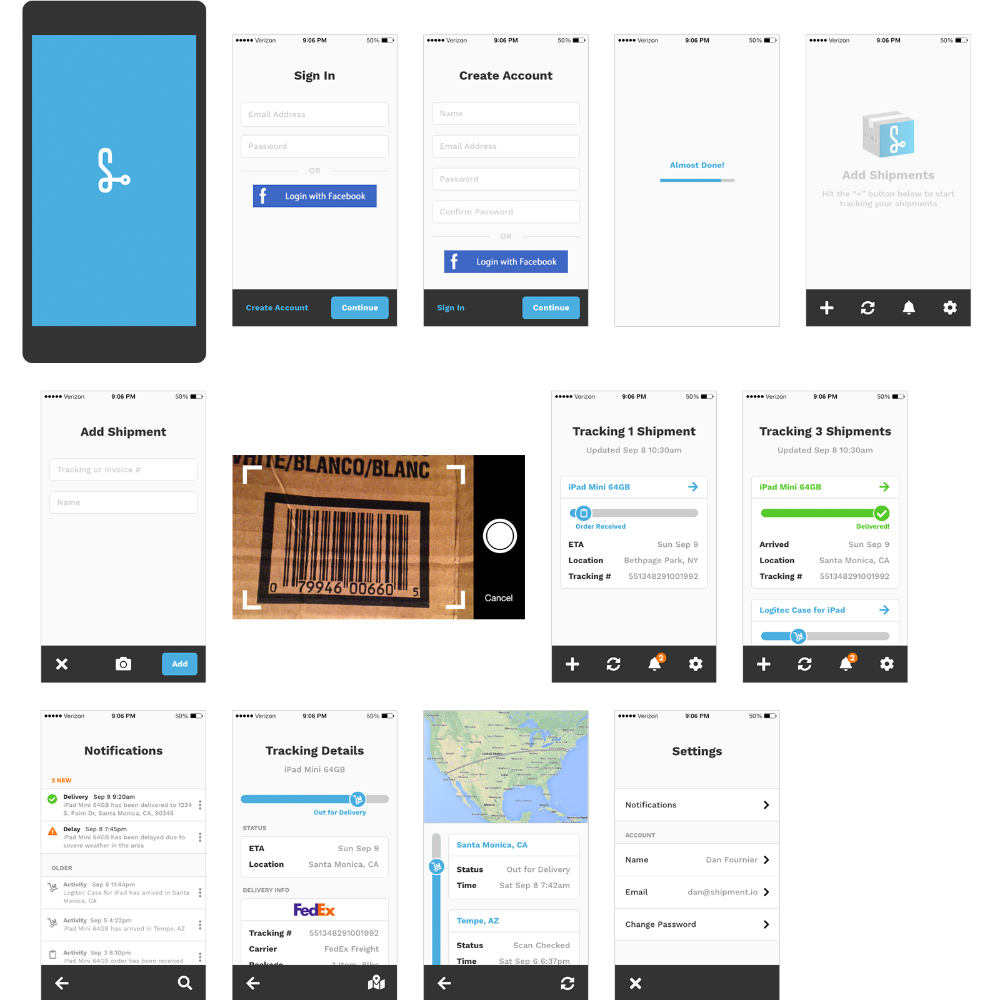
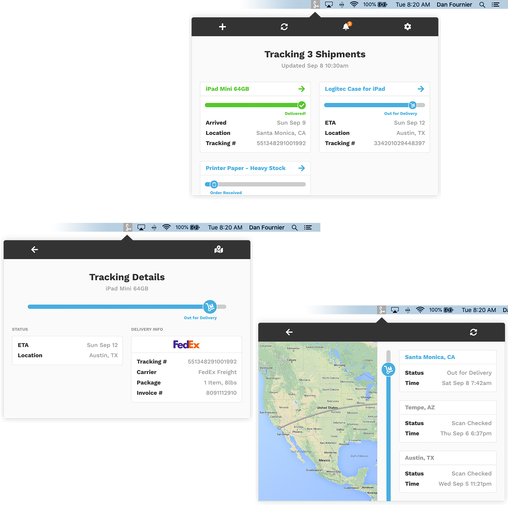
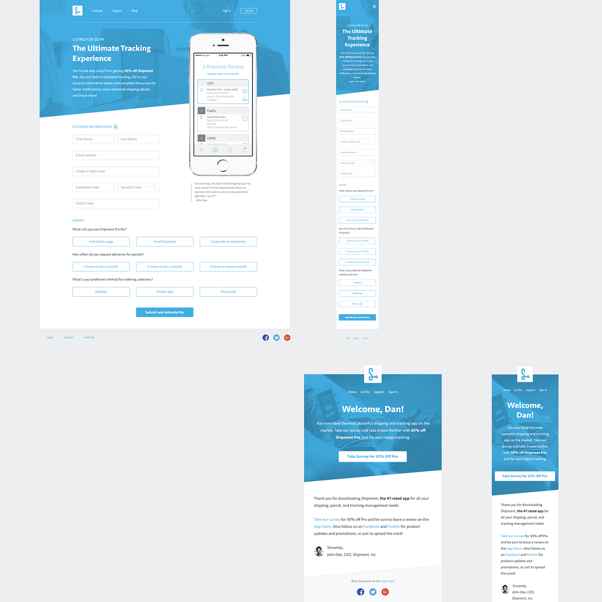
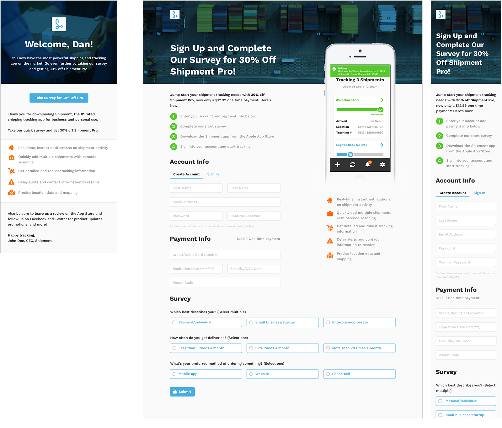
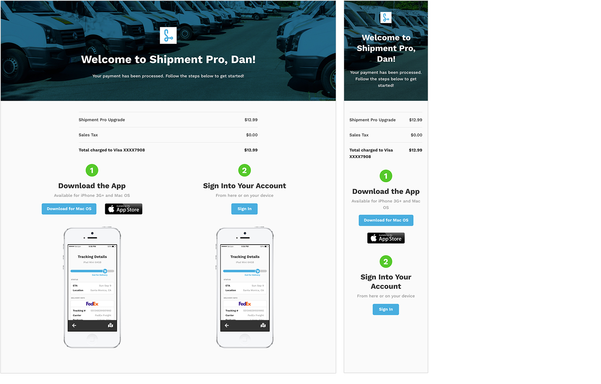
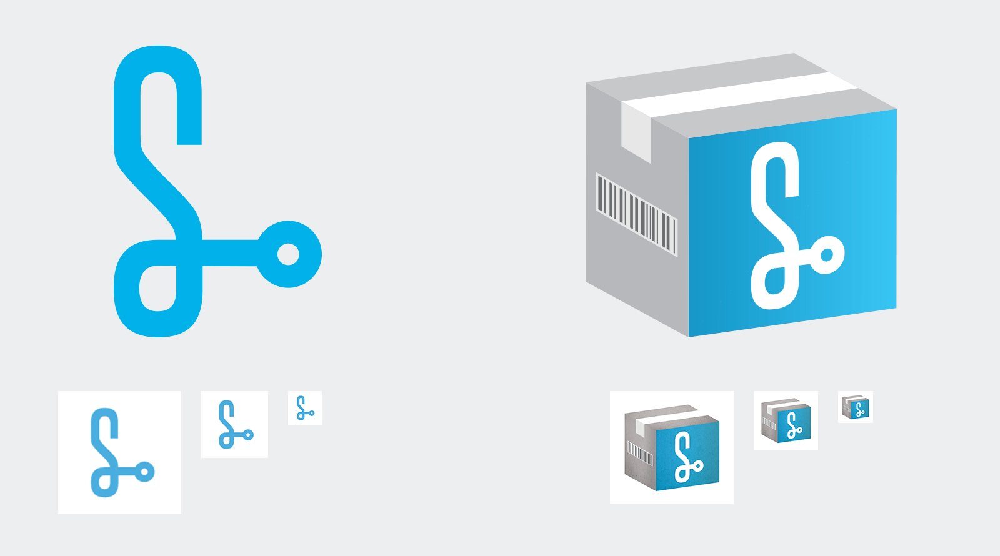

Role
As my first UX side project, a colleague and I had an new idea for an app that assists small business owners with tracking multiple parcels and carriers for their customers.
Challenge
After talking with several startups and business owners that dealt with shipping, we discovered that they all had a hard time organizing and keeping track of multiple shipments for their customers. They'd have to rely on shipping company websites and other 3rd party products that were scattered and unreliable, causing unknown delays and customer frustration.
Process
After sitting down with owners, I noted their needs and behaviors by empathy mapping. I also targeted and drew themes from major problems they were facing, ideated against them, and prototyped designs for feedback and iterations.
Goals
User: Centralize shipment trackings and offer timely notifcations that help keep small business owners hands free and informed so they can offer the best customer experiences possible.
Business: Grow brand awareness, increase downloads/installs, and generate premium subscriptions.
Timeline
3 Months, December 2013 - March 2014
{kind=link}
Discovery
Identifying the Problem
After talking with several business owners about their issues with tracking parcels for their customers, coupled with experiencing this myself with moving multiple items cross-country, my colleague and I were driven to solve this problem.
Goals
User: Centralize shipment trackings and offer timely notifcations that help keep small business owners hands free and informed so they can offer the best customer experiences possible.
Business: Grow brand awareness, increase downloads/installs, and generate premium subscriptions.
Undestand Business Owners and Their Problems
Persona
I wanted to know more about who our users are. During discovery, we realized that small businesses and startups fit our target, having to track multiple items for customers. I then composed an empathy map:
Demographic
- Small business owner
- Price-conscious
- Wears multiple hats/"Jack of all trades"
- Multitasker
Needs
- Automated and real-time tools
- Reliable and low-maintanance/setup
- Up-to-minute notifications and updates
Behaviors
- Visits multiple carrier/vendor sites for shipping info
- Tries to track packages themselves, i.e. spreadsheets or by hand
- Relies heavily on tracking numbers
{kind=link}
{kind=link}
Define Problems and Solve for Them
Existing Problems
From empathy mapping, personal experience, and conversations, I put together a list of common problems business owners faced:
- A lot of these carrier/vendor sites make it unusually hard to track and existing parcel; it can be hard to find
- Since there's multiple tracking numbers across carriers, many people result to tracking manually with spreadsheets and even email grouping which takes too much time
- Refreshing pages constantly and lack of notifications
Ideas
I focused on some key aspects that would form the basis of potential solutions:
- Support as many carriers/vendors as possible to cast a wide net
- All shipments in one place, across desktop and mobile apps
- Accept other forms of data besides just a tracking number
- Keep users informed as soon as activity changes

User journey mapping to plot pain points.
Sketch and Wireframe
Sketches
I focused on the mobile app design and then desktop. Simple hand drawings make it much easier to iterate and exercise design concepts.
Elements and Components
Reusing global design components will help keep the app visually consistent:
- Toolbars: Actions and icons change depending on the view
- Header: Title and subtitle
- Modules: Groups of relavant content
- Progress bars: Indication of activity
- Form fields: User input and submission
Wireframes
Using Photoshop, I refined our sketches into higher fidelity wireframes. This helped us visualize the product easier before further iteration and brand application.
{kind=link}

Version 1 high fidelity wireframes and flows.
{kind=link}
User Feedback and Iteration
Internal and User Reviews
I presented my first version of the prototype to business owners for feedback and took notes. Findings:
- Bolder/larger typography and iconography
- Make form fields and buttons more obvious that they're selectable
- Display tracking number up front and prominently
- Replace pausing shipment option with a notification center
- Include account creation and sign in process
Rapid Prototyping
After implementing feedback and reviewing, I ported the designs, paradigms, and conventions over to the desktop app. Focusing on mobile first made desktop much easier to design.
The Outcome
After further testing with users, I came up with solid mobile and desktop prototypes.


{kind=link}
Product Model and CLM
OKR and Goals
I started outlining a general product model and goals to grow awareness and acquire users:
- Freemium model to get cast a wide net for adoption and usage
- Premium incentives and discounts for downloading apps
- Convert free to paid users using simple incentives
Define CLM
My colleage and I wanted to build a customer lifecycle framework around our microsite and email/growth campaigns using "Pirate Metrics" or the AAARRR model:
- Awareness: Links to microsite, social ads, and cold emails
- Acquisition: Microsite/app account creation and downloading
- Activation: Welcome email with incentives, i.e. complete survey for free trial or % off premium version
- Revenue: Trial to paid conversions
- Retention: Experience and NPS surveys, feedback loops, and user-driven improvements
- Referral: Shared NPS scores, open reviews and word-of-mouth
Undestand Business Owners and Their Problems
Persona
Using our findings from studies and feedback for the mobile and desktop apps, I reviewed our persona:
Demographic
- Small business owner
- Price-conscious
- Wears multiple hats/"Jack of all trades"
- Multitasker
Needs
- Automated and real-time tools
- Reliable and low-maintanance/setup
- Up-to-minute notifications and updates
Behaviors
- Visits multiple carrier/vendor sites for shipping info
- Tries to track packages themselves, i.e. spreadsheets or by hand
- Relies heavily on tracking numbers

Come Up with Solutions
Key Aspects
I listed out aspects that aligned with ours goals of drawing potential customers in with incentives for conversion:
- Have "Get Pro" and "Activate" links as prominent and frequent as possible
- Create minimal barrier of entry during account creation
- Have the value proposition be short and clear
Ideas
- Visitors complete account creation and survey questions to get premium incentives
- Welcome email -> Microsite -> Download -> Convert
- Survey data should be leveraged for user understanding and product evolution
Sketch and Wireframe
Hand Sketches
I started sketching the microsite and email designs since those would be the center piece of the CLM flow. Simple hand drawings make it much easier to iterate and exercise design concepts.
Wireframes
Using InDesign, I refined sketches into wireframe options, listing out the pros and cons of each approach. Rooted in user feedback, this helped us narrow down ideal candidates before further iteration and brand application.
Refinement
When we settled on a option, I took to Photoshop and came up with a version 1 design.
{kind=link}

Version 1 of microsite and welcome email design.
{kind=link}
User Feedback and Iteration
Internal and User Review
After showing version 1 of the microsite and welcome email prototypes to business owners, I took notes and boiled it down to these key needs and asks:
- Emphasize incentive CTA more
- Remove extra nav and footer links, drawing more focus on the account setup and survey sections
- Briefly describe what users get in the Pro offering and its price
- Make survey answers more obvious that they're single or multi select
Rapid Prototyping and Finalizing
After more feedback, we got the microsite and welcome email to a good point with rapid prototyping.
The Outcome
With prototyping and reviews, I came up with good candidates for our CLM pipeline and release.


{kind=link}
Inspiration
Initial Direction and Themes
My colleague and I wanted branding and a logomark that conveyed the actual purpose of the product: tracking your shipment's location. Just from this initial idea, I came up with some themes to work with and evolve:
- Shipping isn't just a straight line between point A and B
- Use the unique shape of the "S" to show direction and movement
- Trucks, loading docks, and mail carriers are synonymous with shipping
- Just about the journey as it is with the destination
Examples and Insight
With themes in mind, I put together an inspiration board with examples from competitors, stock image sites, and other delivery-centric sources.
Define Design Language
Direction
Back in 2013, many companies in the technology space were redefining their image. Traditionally, the skeuomorphic design style was prominent, mimicking physical objects using gradients, shadows, neutral color tones, and subtle features. However, a new wave of the "flat" design movement was on the horizon, paved way by Apple's iOS 7 redesign. Design language was becoming simplified with gradients being replaced by solid, bright colors, shadows removed, and typography becoming more modern. I wanted to explore this type of design because I studied it in school and was excited to see it getting adopted again.
Themes
With a direction in mind, I started on the very basics of the Shipment design language – themes:
- Forward movement and intention
- Minimalistic and stripped down
- Bright, heavy contrast
Building Blocks
Using themes to drive design language decisions, I broke it down into building blocks:
- Color palette: primary blue and green for positivity, secondary orange for alert and attention and dark grey for starkness
- Shapes: Recrtangle, subtle round borders, flat
- Typography: Modern, sans-serif, bolder
- Iconography: Simple, rounded, solid
- Imagery: Candid, delivery-focused
{kind=link}
{kind=link}
Define Logo and Mark
Ideas
Inspiration, metaphors, and themes greatly helped me understand how to approach our logo and variations. We decided to use the "S" shape that ties in with our initial theme of "shipping isn't just a straight line between point A and B".
Sketches
I started drawing elements and objects that represented this concept, focusing on the logo mark. Soon we settled on one variation of the "S" shape that clearly conveyed the start -> journey -> destination approach and iterrated on that.
Digitize and Refine
With a final drawn logo settled on, I went into Adobe Illustrator and designed it. We kept the various form factors in mind with the product, like App Store icons, website insertions, physical product insertions, and app icon requiements and exported.
Alternative Mark
Along with the "S" symbol, we came up with an alternative logomark that also expressed this idea of "delivery" and "physical goods" people get during the shipping process. This mark would be used for other purposes like empty states, email banners, stickers, and other smaller form factors.

Final logo and mark variations.
The Outcome
All the inspiration, definition, refinement, and iteration led to a promising brand, visualized and brought to life by the mobile and desktop app prototypes, microsite, emails, and ad campaigns.